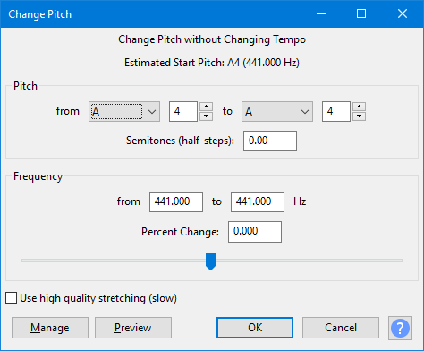

Change Pitch
To change pitch and tempo simultaneously, use .
- Accessed by:
- 
{kind=link}
Change Pitch works by applying an up or down percentage change to the existing pitch of a selection. As well as choosing the percent change directly you can define it as:
- a change from one pitch to another
- a change in semitones
- a change from one frequency to another.
| Change Pitch senses the first detectable pitch in a selection and sets "Pitch from" and "Frequency (Hz) from" accordingly. These two controls are not a detection of the "key" or "tonality" of music. |
Pitch
If you know both the key the original recording is in and the key you want to change it to, change both the Pitch "from" and "to" values.
- Estimated Start Pitch: Attempts to detect the pitch of the most meaningful note at the start of the selection. The letter (with sharp "#" / flat "b" suffix as required) indicates the musical note and the number indicates the octave position of the note. The frequency of the detected pitch is given in parentheses. For example, if you have a very short, quiet note on A3 followed by a longer, louder note on C4 Audacity will probably detect C4 but if the second note is the same volume then Audacity will probably detect A3.
- "from" and "to" controls: The "from" and "to" controls each have a dropdown menu for selecting the musical note, then to right of that menu, a text box for selecting the octave of that note.
- Semitones (half-steps): If you do not know the key the original recording is in but you know how many semitones it needs to be changed, enter that value here. For example you could duplicate a vocal track and then apply Change Pitch with a value of +7 semitones (a major fifth) to create a harmony vocal.
| If you change the Pitch "to" note when the "from" and to" octaves are the same, this could mean either an increase or decrease in pitch depending on the "from" Pitch. So it is recommended to check in the "Semitones (half-steps)" box if the value is going down (minus sign) or up (no sign) as you intend. If you need to change pitch in the other direction you can change the semitones value instead (see the example below) or change the "to" octave number. |
Frequency (Hz)
The "from" input box initializes to the first meaningful detected pitch in the selection and does not update if the other controls are changed. However if you know the original frequency and the frequency you want to change to, you can enter these in the "from" and "to" boxes. Detection of a steady sine tone will often be very accurate (with the upper frequency limitation noted below) in which case you may only need to change the "to" input box to the desired frequency for the tone.
- Percent Change: If you would like to change the pitch by a given percent, enter a value in this input box or use the slider.
Use high quality stretching (slow)
If this checkbox is enabled, the same SBSMS high quality algorithm is used that is used in the Sliding Time Scale / Pitch Shift effect. Change Pitch will process much more slowly if this checkbox is enabled, but the exact length of the selection will be preserved. For small to moderate tempo changes, the resulting quality will usually be higher, especially with percussive music (such as piano music).
Example
If we have music that we know is in the key of A, Audacity may estimate the pitch as A if the first note is an A. However, music does not always start on the same note as the musical key it's in, so the detected note will not necessarily be an A. That does not matter because we know the current key and the key we want to change to. Whatever the detected pitch, we'll set the "from" pitch to be an A and the "to" pitch to be the C#/Db above that A.
In the image above, the first note detected was actually B4. This makes it the second note in the scale of A major or A minor in fourth octave position (that is, nearly an octave above C4 which is commonly known as "Middle C").
- Change "from" pitch to A by clicking in the dropdown menu.
- Change "to" pitch to C#/Db by clicking in the dropdown menu.
- Observe the octave text box to right of "to" pitch is still at 4, indicating a pitch change down of 8 semitones.
- Click the upward-pointing arrow to right of the "to" octave text box (or click in or select the box and press Up arrow) to change the octave to 5. This is necessary because the octave number always increases by 1 when moving up through C.
- We now have the change we want from A4 to C#/Db5, so we could click to make the change.
Before changing the pitch, observe that the pitch change could have been entered in other ways. Had we realised that A to C#/Db was 4 semitones, we could have left the pitch controls alone and just entered 4 in "Semitones (half-steps)". It does not matter that the pitch change indicated would have been from B4 to D#/Eb5, because it is the interval of 4 semitones that Audacity is applying.
We could also have achieved an identical result by simply setting the "Percent Change" to 25.992 (if we happened to know that 4 semitones upwards is equivalent to 25.992%).
Limitations
Change Pitch is a time-stretching effect, because it defies the normal expectation that to lower the pitch of the audio it is necessary to reduce its speed (and thus its length) and vice versa. As with any time-stretching effect, some audible distortions will be expected, particularly at more extreme settings.
Change Pitch by default does not keep the length of the selection exactly as before. Enable the checkbox Use high quality stretching (slow) if it is important to keep the exact same length, for example if changing the pitch of individual very short notes.
The highest reliable detection frequency is about 1/8th of the sample rate. So for a sample rate of 2000 Hz, pitch detection will not be accurate much above 250 Hz and for the default project rate of 44100 Hz, detection will not be accurate much above 5500 Hz.
Buttons
Clicking on the command buttons give the following results:
- gives a dropdown menu enabling you to manage presets for the tool and to see some detail about the tool. For details see Manage presets.
- plays a short preview of what the audio would sound like if the effect is applied with the current settings, without making actual changes to the audio. The length of preview is determined by your setting in , the default setting is 6 seconds.
- applies the effect to the selected audio with the current effect settings.
- aborts the effect and leaves the audio unchanged.
 brings you to the appropriate page in the Manual, this page.
brings you to the appropriate page in the Manual, this page.